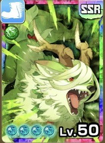

ルピナス（SSR）
基本情報

SSR
| レアリティ | SSR |
|---|---|
| オーラ | 緑 |
| カードタイプ | 回避 |
| モン類 | 獣族 |
| イベント2 | 調査中 |
管理者による評価
管理者による解説
・緑SSRでモン類は獣
・トレ効果17％と忠誠度45％に加えオーラトレ効果12％は破格
・MR含む全カードの中でも最強クラスのトレ性能
・リカバーは性能も恩恵を受けるモンスターの数も優秀
・ガッツ回復と回避上昇はバトルの環境を動かすパワーがある
・メンタルが真の壊れ能力
・残りガッツ60以下なら技当てるたびにガッツ20回復は破格すぎる